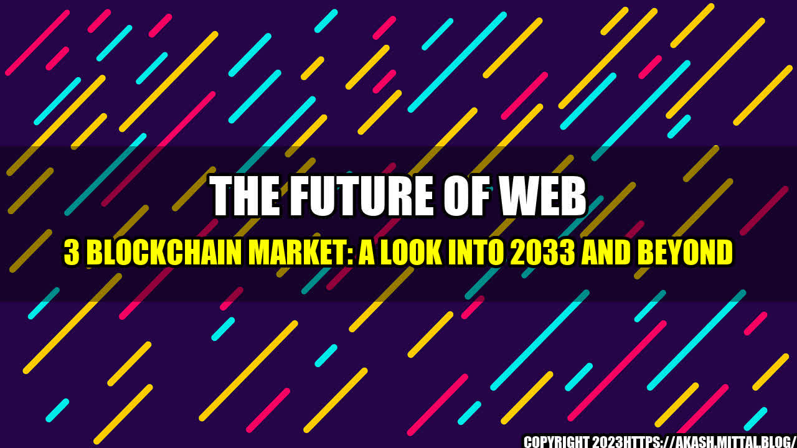

The Future of Web 3 Blockchain Market: A Look into 2033 and Beyond
It was the year 2021 when Nadia, a young entrepreneur, stumbled upon the world of Web 3. She had heard about the potential of blockchain and decentralized technologies, but had never really delved deep into it. However, when she started exploring the possibilities, she was amazed at the potential for innovation and transformation. Fast forward to 2033 and Nadia is now a successful business owner, using Web 3 technologies to create new products and services that would have been impossible a decade ago.
The Current State of the Web 3 Blockchain Market
The Web 3 blockchain market has come a long way since its inception. In 2020, the market was worth $1.2 billion, but it is expected to grow to $9 billion by 2025 and reach $23 billion by 2030, according to a report by MarketsandMarkets.
Web 3 Blockchain Market Future Aspect Analysis and Current Trends by 2033
The growth of this market is not surprising, given the numerous benefits that Web 3 technologies offer. For one, blockchain is a secure and transparent way to store data, making it ideal for use in finance, healthcare, and other industries. Additionally, decentralization means that there is no central authority governing the network, reducing the risk of fraud and corruption.
One of the most significant trends in the Web 3 blockchain market is the rise of Decentralized Finance (DeFi). DeFi protocols allow users to access financial services without the need for intermediaries like banks. This has led to a surge in peer-to-peer lending, borrowing, and other financial activities that were previously only available through centralized institutions. According to DeFi Pulse, the total value locked in DeFi protocols has grown from $680 million in 2020 to over $50 billion in 2021.
Another trend in the Web 3 blockchain market is the increase in NFTs (Non-Fungible Tokens). These unique digital assets are being used for everything from artwork and music to video game assets and virtual real estate. In 2021, an NFT by artist Beeple sold for $69 million, making it one of the most expensive pieces of digital art ever sold.
Web 3 Blockchain Market Trends in 2033
By 2033, we can expect to see continued growth in the Web 3 blockchain market, with even more innovation and adoption. Here are some quantifiable examples of what the market could look like.
- DeFi protocols could account for over 50% of all financial transactions, according to some experts.
- The total value locked in DeFi could exceed $1 trillion by 2033.
- NFTs could be used for everything from real estate to digital identities, and could be worth trillions of dollars.
- The Web 3 blockchain market could have a market cap of over $200 billion by 2033.
- Blockchain could be used extensively in supply chain management, reducing fraud, waste, and inefficiency.
- The pharmaceutical industry could use blockchain to track drugs from production to consumption, reducing the risk of counterfeit drugs and improving patient safety.
and Case Studies from the Web 3 Blockchain Market
To really understand the potential of the Web 3 blockchain market, it is essential to look at some personal anecdotes and case studies.
Case Study 1: A Decentralized Social Media Platform
John is a software engineer who has been working on a decentralized social media platform for the past few years. The platform, called DappNet, uses blockchain technology to create a more secure and private social network. Users' data is stored on the blockchain, meaning that there is no central authority controlling the network. Additionally, users can earn tokens by participating in the network, providing an incentive for engagement. By 2033, DappNet has over 100 million users and is a major player in the social media industry.
Case Study 2: Blockchain in Supply Chain Management
Jane is a logistics manager for a large retail company. In 2025, her company started using blockchain technology to track products from the factory to the store. This increased transparency in the supply chain, reducing the risk of fraud, and ensuring that goods were delivered on time. By 2033, blockchain is used widely in the logistics industry, reducing waste, and increasing efficiency.
Conclusion
The Web 3 blockchain market has come a long way in a short amount of time. However, there is still a massive potential for innovation and transformation. By 2033, we can expect to see continued growth in the market, with new use cases and technologies emerging. Key trends like DeFi and NFTs will continue to shape the market, and blockchain will be used in a variety of industries, increasing transparency, and reducing waste. The future of Web 3 blockchain is bright, and those who embrace it will be at the forefront of innovation and change.
References and Hashtags
MarketsandMarkets report: https://www.marketsandmarkets.com/Market-Reports/blockchain-technology-market-90100890.html
DeFi Pulse: https://defipulse.com/
Beeple NFT sale: https://www.christies.com/features/Monumental-collage-by-Beeple-is-first-NFT-artwork-to-come-to-auction-11510-7.aspx
Hashtags: #Web3 #Blockchain #DeFi #NFTs #SupplyChain #Innovation #Transformation
Article Category: Technology
Curated by Team Akash.Mittal.Blog
Share on Twitter Share on LinkedIn